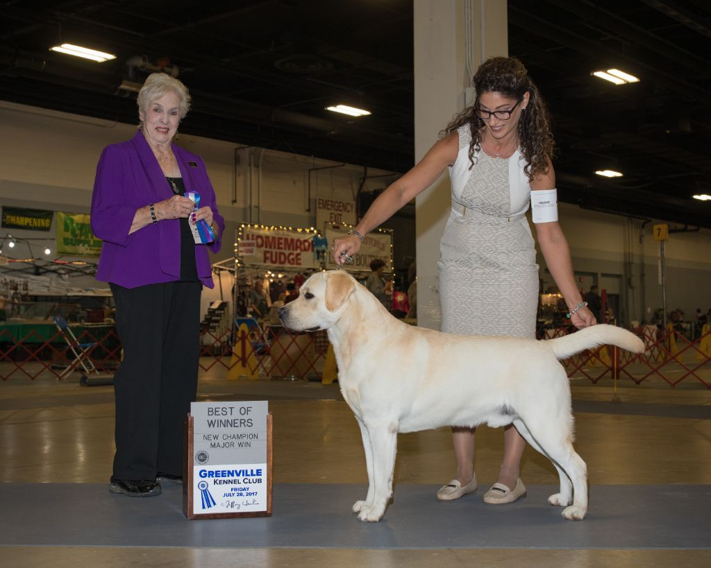
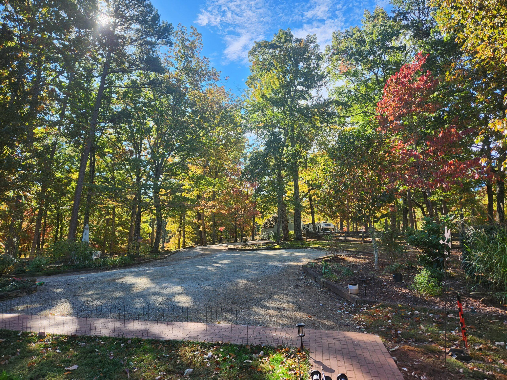
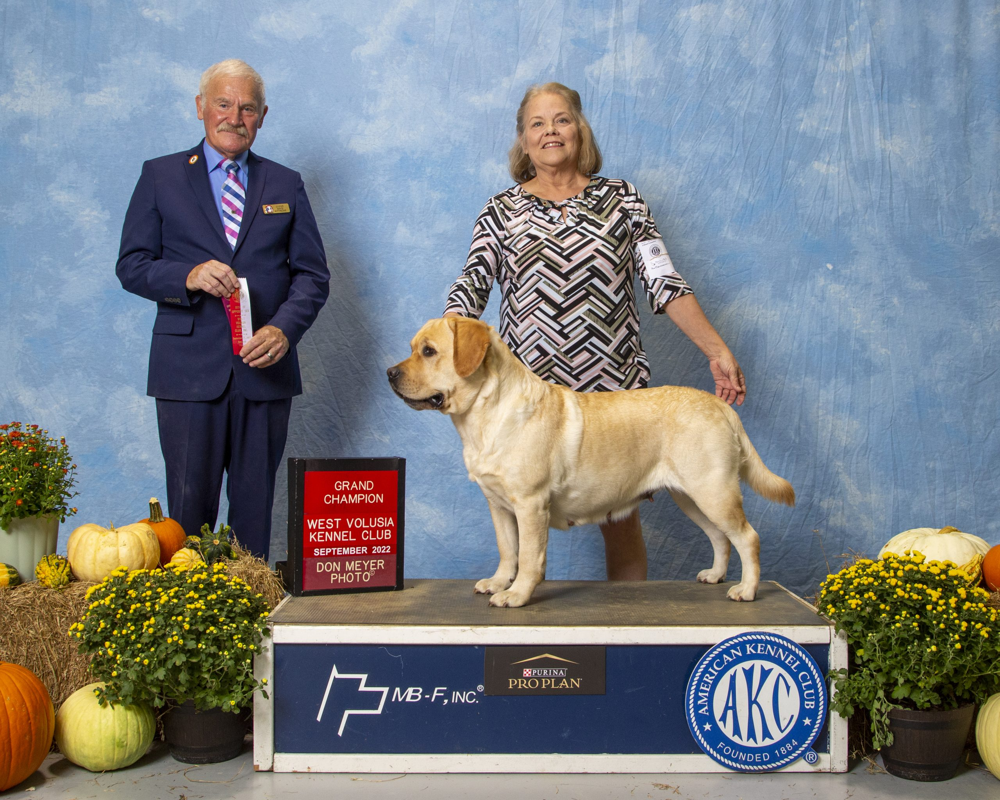

CH Spirit Oaks Berghoff's Tropical Treat
"Berghie" — our handsome conformation Champion, a Winners Dog and Best of Winners, with the classic blocky head and sweet English Lab temperament.
About BerghieHome of CH Spirit Oaks Berghoff's Tropical Treat & GCH Spirit Oaks Isabella of Persimmon Hill — English Labrador Retrievers with superb temperaments, raised in our home and loved like family.
We've been breeding Labradors since 1994 on a lovely 17-acre farm in the Foothills of Western North Carolina. Our dogs live in the house and sleep with us every night.
Only 5–7 Labs live here at any time. Every puppy is raised underfoot in our home, well-socialized and ready to be your companion in every adventure.
Our program is built on titled, health-tested English Labs — including a conformation Champion and a Grand Champion — bred for beauty and temperament.
Classic English Labs with the athleticism, love of water, and gentle disposition that first made us fall in love with the breed.

Persimmon Hill Labs sits on a lovely 17-acre farm in the Foothills of Western North Carolina. It's home to 5–7 Labs at any given time. We love our babies — they live in the house and sleep with us every night.
My love of Labs started as a young girl in Maryland, always amazed at their athleticism and their love of water. They are all English Labrador Retrievers with superb temperaments — and beautiful!
Read Our StoryThe heart of our breeding program.

"Berghie" — our handsome conformation Champion, a Winners Dog and Best of Winners, with the classic blocky head and sweet English Lab temperament.
About Berghie
"Bella" — our beautiful Grand Champion girl, the heart of the hillside and mother to some of the sweetest pups we've ever raised.
About BellaRaven of Persimmon Hill and Spirit Oaks Winter Storm are expecting — estimated whelping date November 24, 2026. Reserve your spot by submitting an application.
Apply Today